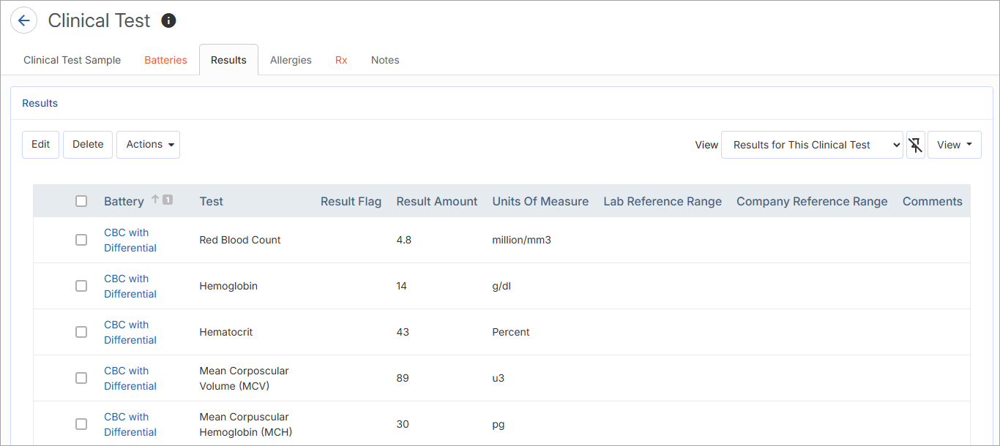
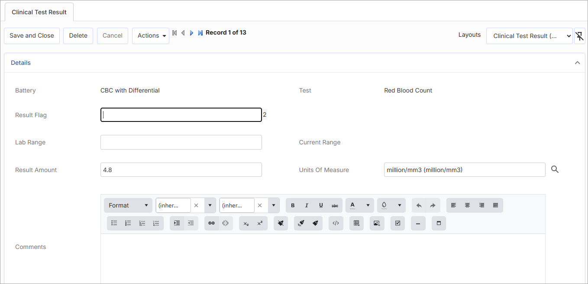
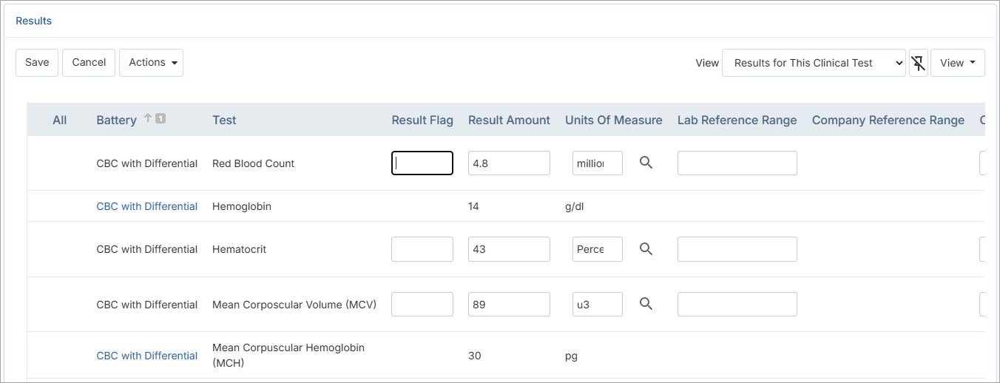

The Results tab of the Clinical Test Sample form lists all tests for all batteries added to the sample, and allows you to enter the results for each.

Select the test you want to enter results for.
On the Clinical Test Results form, enter or select the test results.

In the Result Flag field, enter P or N (positive or negative) for drug testing, or H or L (high or low) for other tests.
In the Result field, enter the result of the test.
The Units of Measure, Lab Range and Current Range fields may contain default values for standards. Change these values as required—lab ranges are imported into the system and current range is usually the company range. Note the Current Range reflects the appropriate values for the Unit of Measure selected for result entry; if a valid conversion exists, the range will automatically convert to match the selected UOM.
Add any Comments if necessary.
Indicate if the information is to appear in the Problem List (see Working with the Problem List).
Click Save.
If the optional Converted Current Range, Converted Result and Converted Unit of Measure fields are added to the Results form layout (and the Systems and Units tab in the ClinicalTestUnit table, the SystemofUnits table, and conversion factors in the UnitsOfMeasure table are defined), then results are shown in the unit of measure in which they were entered, and converted results are shown based on the configuration of the system setting, the system and units, and the UnitsOfMeasure conversion factors.
If there are multiple tests to enter results for, select all the applicable tests and click Edit to quickly enter all of the results on the same screen, instead of opening each test separately.
